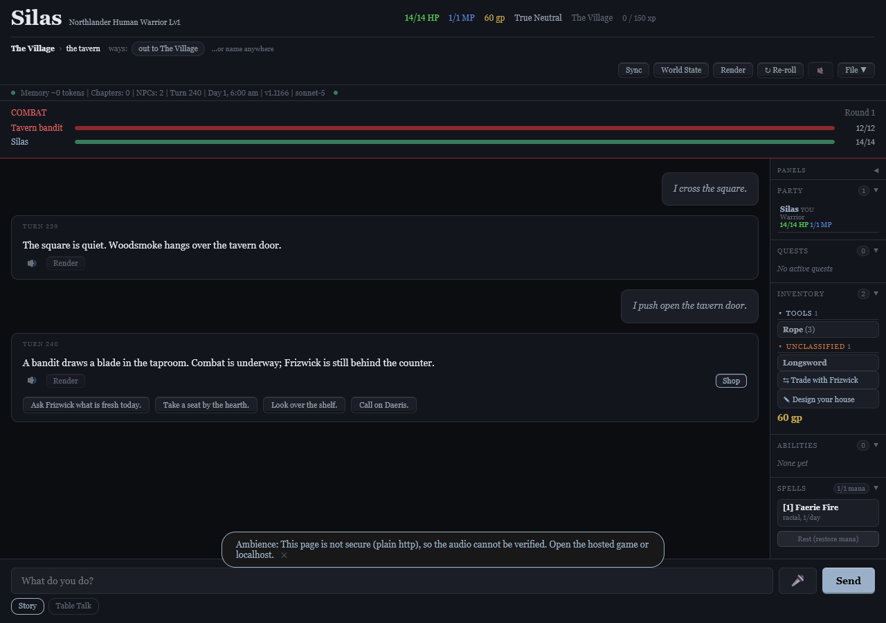
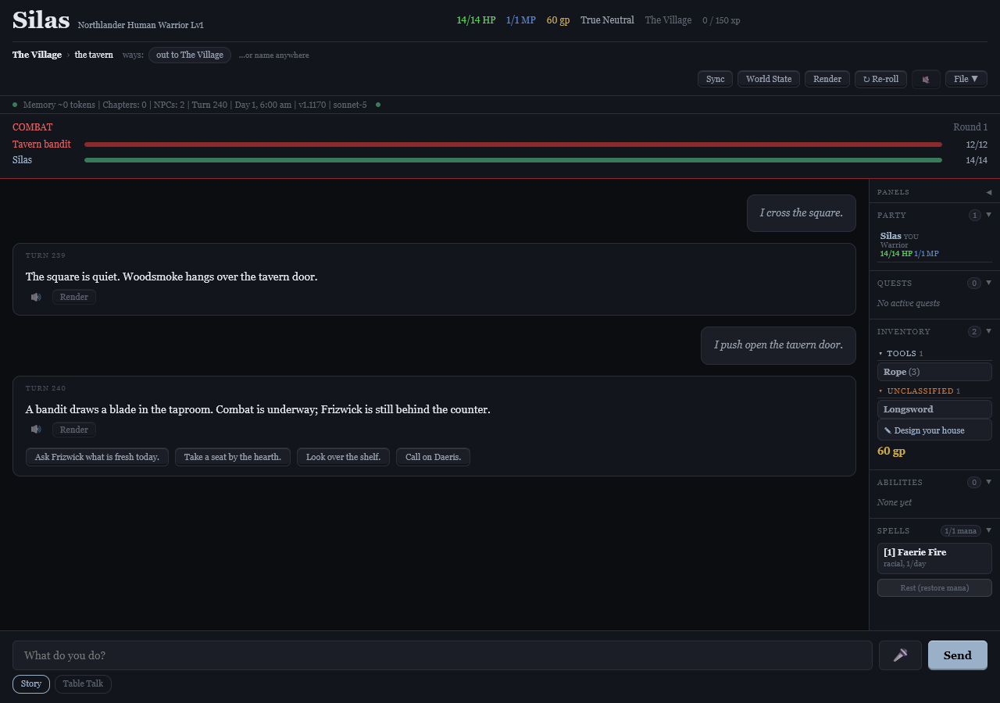

Owner-authorized batch, 7 October 2026. Baseline cb87fe5d. #517, #518 and #531 excluded. Owner explicitly prefers “Took 0 damage”; #527(28) is intentional and unchanged.
| Issue | Scope | Status |
|---|---|---|
| 532 | Preserve voices across accepted NPC merges | Implemented and independently reviewed · v1.1172 |
| 539 | Preserve direction and speed across sheet generation | Implemented and independently reviewed · v1.1173 |
| 527(12) | Preserve ARC_CONTINUE intent in title-mismatch advice | Implemented and independently reviewed · v1.1165 |
| 527(14) | Scan prose and labels with their proper word lists | Implemented and independently reviewed · v1.1166 |
| 527(16) | Keep colons inside campaign titles | Implemented and independently reviewed · v1.1167 |
| 527(18) | Preserve location receipts and match place case | Implemented and independently reviewed · v1.1168 |
| 527(20) | Distinguish possessions from addressing an absent person | Implemented and independently reviewed · v1.1169 |
| 527(22) | Repair malformed ability rows before level checks | Implemented and independently reviewed · v1.1170 |
| 527(24) | Close shopping entry and commit paths during combat | Implemented and independently reviewed · v1.1171 |
skelTitleMiss retained the object kind (arc/act) but discarded the operation, so a rejected ARC_CONTINUE was described as closing and generated ARC_COMPLETE advice.
The existing one-shot mismatch record retains continuation intent. Its receipt and retry advice ask for ARC_CONTINUE; completion and legacy saved-record behavior remain unchanged. No lifecycle transition or extra persistent queue was added.
Verification: Two targeted assertions failed before the fix; all three new assertions, three existing C4 assertions and 14 independent real-engine checks pass. Seven new plus five retained named mutations caught. Full commit gate: 2,679 engine assertions and 102 standalone suites. Stable and volatile prompt bytes unchanged on three real saves; deployed source matches commit 97675f2e. The conditional continuation-mismatch note changes intentionally.
Review: Critical pre-review resolved the intent-loss mechanism. Independent Astra review approved with no blocker after 14 real-engine assertions. Named mutation proof and the full pre-commit gate are required shipping checks.
The skeleton register scan used the stricter label vocabulary for every field, so ordinary descriptive prose such as 'A spirit manifests' was treated as accountant language.
Act/arc titles retain LABEL_RE; premise, goals, turning points, objectives and dnaHint use REGISTER_RE, the narration vocabulary. The archived owner remedy specified the widened REGISTER_WORDS list for prose. Neither vocabulary nor the finding schema changes; no unreliable noun/verb guessing is introduced.
Verification: Two new assertions failed before implementation; three new and 13 retained engine assertions, eight async groups and 63 independent field/word checks pass. Eight new plus 17 retained named mutations caught. Full commit gate: 2,682 engine assertions and 102 standalone suites. Stable/volatile prompts unchanged on three real saves. Commit 9b37b65e.
Review: Critical review reconciled the recorded prose/label distinction with the implementation contract. Independent Astra review approved with no blocker; scanner is read-only and accumulates no persistent state.
Village trimmed settlement prose at its first colon, which also cut colons within the stored campaign title.
The shared settlement renderer accepts a structured omitHow option. Village hides the reason while preserving the entire campaign title; adventure and sheet rendering retain the reason.
Verification: Two of three new assertions failed first; three new and 21 retained assertions now pass. Five new and 19 retained named mutations caught. Independent review passed 32 cases. Three real-save stable and volatile prompt fingerprints remain identical. The synthetic colon-title Village line changes intentionally. Mandatory full pre-commit gate required before shipping. The first full gate caught a stale #437 mutation anchor; it was reanchored equivalently and all 32 retained mutations passed; applicability 2554/2554. Corrected full gate passed: 2685 engine assertions and 102 standalone suites; commit 6f3baa28 pushed.
Review: Independent Astra review approved with no blocker. Pure formatting change, no per-turn state or accumulation.
The receipt trimmed terminal s characters instead of whitespace, while an optional current-world operand was compared case-exactly.
Restore whitespace trimming and accept case-folded equality for the current-world fallback only. Child-place resolution, aliases, text-order location and refusal of other worlds retain their existing behavior.
Verification: Three new assertions failed before the fix and pass after it; two retained A5 assertions pass. Independent reviewer passed 27 assertions. Three real-save stable/volatile fingerprints unchanged. Full applicability 2558/2558. Named mutation proofs and mandatory full commit gate recorded before shipping. Four new and five retained named mutations caught; byte-identical restoration confirmed. Full gate passed: 2688 engine assertions and 102 standalone suites; commit 2a38cfa5 pushed.
Review: Independent Astra review approved with no blocker: full glass receipt, canonical world writes without twins, child scoping and unknown/unrelated place refusals. No added persistent state or resources.
The deceased-person rule excluded possessive names, but the absent-person rule treated a possessive object as its owner being addressed.
Both rules share the existing possessive-aware person-name boundary. Their separate verb, distance and adjacency rules remain intact; later actual addresses are still checked.
Verification: Independent review passed 29 real-engine checks across absent/dead people, first/full names, straight/curly apostrophes, property mentions, later direct addresses and present people. Three real-save stable/volatile fingerprints unchanged. Failure-first regression and named mutation proofs run before the mandatory full shipping gate. One new assertion failed first; all three new and 21 retained assertions now pass. Three new plus four retained mutations caught. Applicability 2561/2561; one mutation anchor was narrowed after it initially hit the wrong earlier rule. Full gate passed: 2691 engine assertions and 102 standalone suites; commit 0f192e05 pushed.
Review: Independent Astra review approved with no blocker. Shared boundary preserves the existing deceased-person behavior and adds no stored state.
An empty ability survived earlier parsing, then ability healing dereferenced its name during relevelOnLoad and crashed before turn setup.
The shared ability healer removes null, undefined and sparse slots before archetype selection or ability readers. It reports original slot positions; the existing wrapper emits a visible repair reason and saves once. Nonempty custom, racial and story entries remain intact.
Verification: All three exact failure cases threw before the fix and pass afterward; nine retained healing assertions pass. Independent review passed 44 checks covering hero/companion, unknown class/Rogue, sparse arrays, unchanged valid objects, next scene-manifest read and repeat-load idempotence. Three real-save stable/volatile fingerprints unchanged. Applicability 2567/2567. Mutation proofs and mandatory full gate required before shipping. Six new plus fifteen retained named mutations caught; byte-identical restoration confirmed. Full gate passed: 2694 engine assertions and 102 standalone suites; commit 25eb2325 pushed.
Review: Independent Astra review approved with no blocker. One-time repair diagnostic uses existing persistence; no additional accumulating state.
Shop entry points and the commit-time catalog checked place and keeper but omitted active combat, so both a fresh counter and an already-open window could trade during a fight.
One counter context blocks combat for both shop opportunities and catalogs. Completion rechecks the live catalog before any transaction mutation, with a visible refusal and console reason. Peace restores shopping; narrated gold and house storage retain their own gates.
Verification: Two new engine assertions and two browser groups failed before implementation. All three new engine assertions, 31 retained assertions and 14 real-browser groups now pass. Six new named mutations caught, including actual browser completion and opener refusal. Independent review passed 13 logic assertions and visually compared the exact 1280x900 live-combat fixture before, after and after a stale-window purchase attempt. Three real-save prompt fingerprints unchanged. Applicability 2573/2573. Retained proofs and mandatory full gate recorded before shipping. All fourteen retained #501 mutation proofs passed with byte-identical restoration. First full gate rejected a missing literal browser-driver declaration in the new battery; the existing Chrome preflight was already present. Documented its driver path, then wiring, applicability and all six mutations passed again. Corrected full gate passed: 2697 engine assertions and 102 standalone suites; commit 9191e8d4 pushed.
Review: Independent Astra review approved both logic and rendered evidence with no blocker. Refused trade leaves world and memory byte-identical; the same marks work after peace. No added resources or persistent state.
Accepted NPC merges omitted roster voice fields, dropping the pin assigned before identity confirmation. Old held-branch work also speculatively shared pins through unaccepted identity hints.
Only accepted merges carry missing actor, direction and speed settings. Surviving settings and sheet ownership win, stale row copies are released, and renamed companion playback resolves the surviving sheet. The replacement deliberately excludes speculative pending-hint sharing and superseded #538 work.
Verification: Five initial assertions failed first; seven new assertions pass. Ten new and nine retained #402 named mutations caught. Independent review passed 81 ownership/pending cases. On 77 read-only real saves, 3860 speaker queries and both gameplay prompt halves are byte-identical to baseline. Isolated full gate passed 2683 assertions. Integrated full gate and final range/replays required before closure. Integrated gate passed 2704 engine assertions and 102 standalone suites; three shared-save prompt fingerprints remain identical. Commit 101a9e4f pushed.
Review: Independent Astra review approved the complete original row scope. This replaces the held branch and its outstanding second review; existing survivor pins and confirmed identity remain authoritative. No new accumulation.
Sheet inheritance copied actor slots but omitted delivery direction and speed. Regeneration could then revive stale row settings or accept model-authored voice fields instead of the existing sheet owner.
Use the shared voice-field registry across first attachment and regeneration. The previous sheet owns both values and clears; initial attachment uses the row. Model-authored settings are discarded, inheritance works without TTS, and row copies are removed after attachment.
Verification: Three engine cases and the actual generation integration failed first. Three new assertions and 17 generation groups now pass; eight new and nine retained #402 named mutations caught. Independent review passed 144 assertions across TTS availability, prior sheets, player settings, all five fields, clears and level/HP retention. Read-only checks on 77 saves and 430 sheets found zero handoff mismatches. Isolated full gate passed 2686 assertions. Integrated gate and final range/replays required before closure.
Review: Independent Astra review approved the whole original row scope with no blocker. Existing owner data, including explicit absence, wins; no provider calls, user-save writes or accumulating resources introduced.
Before: live combat still exposes the story Shop and inventory Trade buttons.

After: the same live-combat fixture has no shopping entry points. Stale modal and direct transaction refusals are covered by the tests. View the refused stale-window purchase.

Required engineering checks come from CLAUDE.md and the CI workflow. Evidence below records the actual runs for this batch.
Critical pre-review and independent Astra post-review apply to protected changes. Each code commit updates the build and cache markers, its TODO record and this receipt; the mandatory full suite runs before the commit is accepted. Mutation proofs name the guarding section and test. Real-save comparisons use in-memory copies; no personal save or cloud library is modified. Deployment checks compare published source bytes with the committed files.
Gameplay stable and volatile prompt fingerprints are compared on Necrotic Dungeon turn 35, Village turn 279 and Long Walk turn 146; any intentional change is attributed in its issue entry. Runtime resources are reviewed for bounded/transient use.